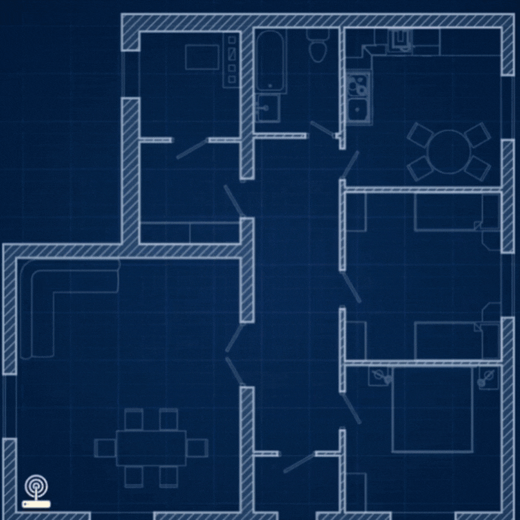
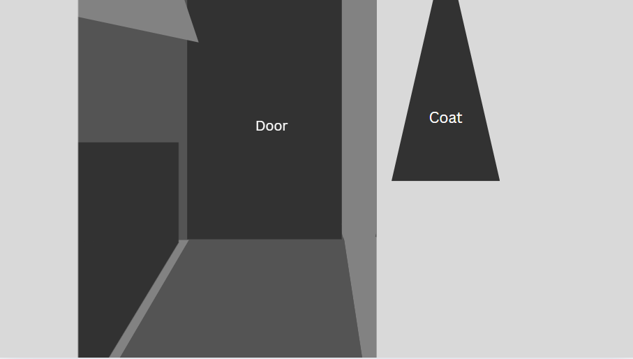
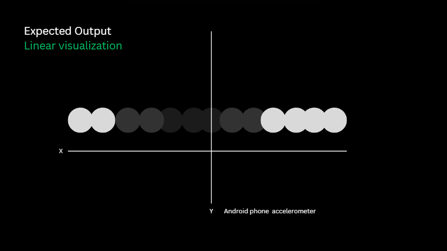
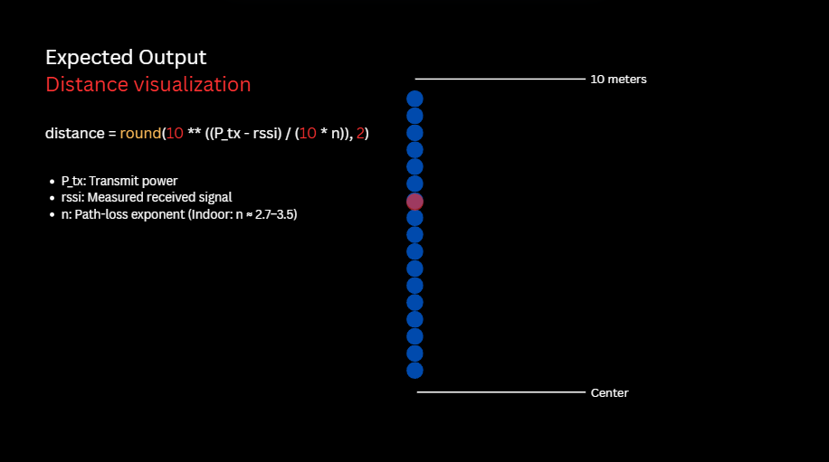
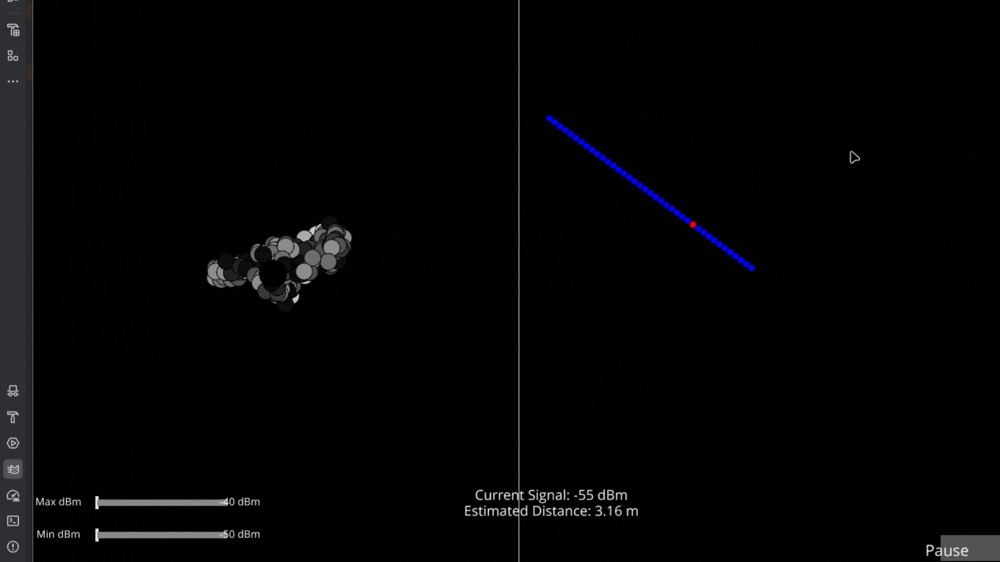

Approximate range
The test produced a maximum displayed distance of around 11 metres, while the reported average was approximately 5.5 metres.
Networked Wireless Imaging & Signal Profiling
An experimental Wi-Fi signal visualization project exploring how received signal strength changes across a physical space. Built with low-cost hardware, Linux and Python, NWISP translates wireless measurements into a spatial representation of a room.
From wireless sensing research to a low-cost experiment
The idea for NWISP originated from research into Wi-Fi-based motion detection and radio-frequency sensing. In June 2013, MIT News covered Wi-Vi, a system designed to detect moving people using low-power wireless signals and specialized signal processing.
Further exploration of MIT Media Lab research into seeing through walls raised a broader question: could ordinary wireless measurements be used to visualize changes in a room, even with inexpensive equipment?
NWISP was my attempt to investigate that question. Rather than reproducing the specialized hardware and algorithms used in advanced research, I built a basic experiment around a Wi-Fi receiver, RSSI readings, spatial coordinates and a custom visualizer.
The aim was to keep the hardware budget low and make the experiment accessible using equipment already available. NWISP is inspired by wireless sensing research, but its RSSI-based approach is substantially simpler than systems that use multiple antennas, channel-state information or dedicated radar processing.
Low-cost equipment used in the experiment
The hotspot provides the wireless transmission, while the Wi-Fi adapter and Linux PC collect signal measurements. Position information is sent separately over UDP and associated with the recorded signal strength in the Python application.
The physical principles behind the measurements

Wi-Fi communicates using electromagnetic radio waves. As a signal propagates through a room, it can interact with walls, furniture, people and other objects. These interactions include reflection, diffraction and scattering.
The receiver measures the combined signal arriving at its antenna. Its received signal strength, commonly expressed as RSSI in dBm, can vary with distance, obstacles, antenna orientation, interference and multipath propagation.
A stronger RSSI reading generally means the receiver is detecting a stronger signal, but it does not uniquely identify the distance to the transmitter or the location of a reflecting object. Different physical environments can produce similar readings.
Mapping received signal strength to approximate distance
To establish a baseline, the transmitter is placed one metre from the receiver and multiple RSSI readings are collected. Their average provides a reference measurement for the experiment. Additional measurements are taken at known distances to observe how the signal changes.
These measurements can be used to estimate the path-loss exponent, which describes how quickly signal strength tends to decrease with distance in a particular environment.
d = estimated distance · d₀ = reference distance · P₀ = mean RSSI at d₀ · n = path-loss exponent
In the implementation, the model provides an approximate distance estimate based on the measured RSSI and calibrated reference values. The experiment then uses the estimate in its distance visualization.
The original approach also divides the estimated transmitter distance by two to approximate a reflected-object distance. This is a simplifying assumption rather than a general property of RSSI measurements: the receiver does not directly measure a round-trip path or isolate a particular reflection. The result should therefore be treated as an experimental estimate, not a precise range measurement.
From measurements to a visual representation
A hotspot emits Wi-Fi signals into the environment.
The receiver records signal strength as RSSI.
Position data arrives through UDP and is paired with readings.
Python renders the measurements as spatial dots and estimates.
The linear visualizer plots readings using the Android phone's current XY position. Signal strength is normalized and mapped to a grayscale colour, ranging from dark for weaker readings to brighter shades for stronger readings.
A separate distance visualization displays a vertical series of blue reference dots. A red dot represents the current estimated distance within the visualization's range.



NWISP in operation
Comparing the model with the room layout
Based on the room dimensions, the initial expectation was that the visualizer would reveal stronger signal readings near some boundaries and weaker readings in other areas. The approximate distances used for comparison were 1.5 metres to the left wall, 1.2 metres to the right wall and 5.5 metres to the door at the furthest point.
These expectations provided a baseline for evaluating the output, but RSSI does not necessarily increase near walls. Reflections and interference can either increase or decrease the measured signal strength depending on the geometry and phase of the arriving signals.
The test produced a maximum displayed distance of around 11 metres, while the reported average was approximately 5.5 metres.
Estimates around 1.5 metres and 1.2 metres were observed for the left and right wall respectively, broadly matching the approximate room measurements.
The linear heatmap showed less colour variation than expected, making the shape of the room difficult to interpret reliably.

Factors affecting reliability and repeatability
| Factor | Effect on the experiment |
|---|---|
| Multipath propagation | Reflections can combine constructively or destructively, changing RSSI even when the transmitter and receiver have not moved far. |
| Walls and materials | Different materials attenuate and reflect radio waves differently. The resulting measurements depend on both material and geometry. |
| Antenna orientation | The orientation of the transmitter, receiver and any directional antenna can alter received signal strength. |
| Interference | Other Wi-Fi devices and radio sources can contribute to fluctuating readings. |
| Path-loss exponent | A model calibrated for one environment may not represent another area or measurement geometry. |
| RSSI-based ranging | Similar RSSI values can occur at different distances, so the calculated range is inherently approximate. |
| Limited spatial sampling | A small number of readings or restricted movement can produce an incomplete, low-contrast map. |
Potential next steps beyond the initial proof of concept
More advanced techniques such as time-of-flight ranging, angle-of-arrival estimation or Wi-Fi channel-state-information analysis could be investigated in future iterations. These approaches require compatible hardware and suitable signal processing; they cannot be obtained reliably from ordinary RSSI values alone.
Evaluation of the NWISP proof of concept
NWISP demonstrated a basic pipeline for combining wireless signal-strength measurements with position data to produce real-time visual output. The distance display provided approximate values that could be compared with the physical room, while the linear grayscale visualization was less successful at representing the expected room structure.
The experiment highlighted the limitations of RSSI-based ranging and the influence of multipath propagation, antenna orientation and environmental conditions. Overall, NWISP was a useful proof of concept for exploring wireless measurements, signal processing and spatial visualization. More reliable environmental calibration, denser measurements and more advanced radio hardware would be needed to move towards a more precise sensing system.
Background material and related wireless sensing research